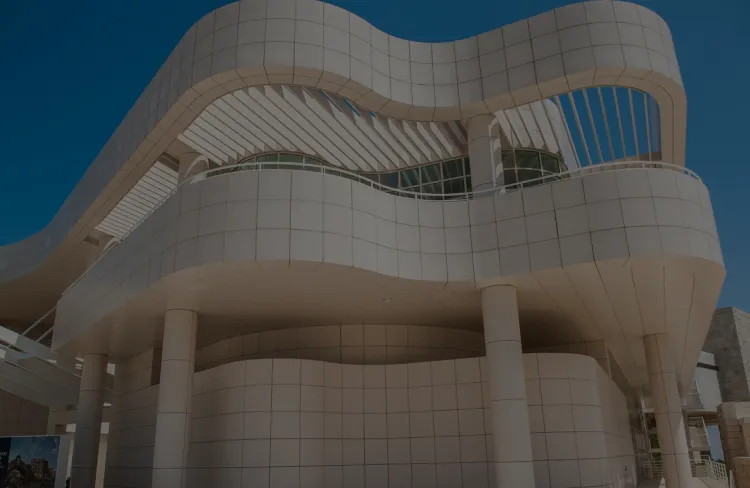

The Getty Center
Fondation Cartier
Dominant majestueusement les collines de Brentwood à Los Angeles, The Getty Center s'érige comme un chef-d'œuvre architectural où l'art et l'histoire convergent.
Conçu par le talentueux architecte Richard Meier, ce complexe culturel est bien plus qu'un musée ; c'est un lieu emblématique qui offre une expérience unique, harmonisant l'art, l'architecture et la nature.
par Viktor Ghirardelli
Publié aujourd’hui | Temps de lecture 1 min
Genèse et Réalisation
L'aventure artistique de The Getty Center a débuté en 1984 lorsque le magnat du pétrole J. Paul Getty a proposé la création d'un complexe dédié à l'art et à la culture.
L'architecte Richard Meier a été choisi pour concrétiser cette vision audacieuse. Inauguré en 1997, le Getty Center est un véritable chef-d'œuvre d'architecture moderne, utilisant des matériaux tels que le travertin et l'aluminium pour créer un ensemble à la fois monumental et élégant.
Description Visuelle et Emplacement
Perché sur une colline, le Getty Center se distingue par son esthétique épurée, ses jardins impeccables et ses structures immaculées. Les bâtiments aux lignes contemporaines s'intègrent harmonieusement à l'environnement naturel, offrant des vues imprenables sur la ville de Los Angeles. Les espaces intérieurs, inondés de lumière naturelle, abritent une collection d'œuvres d'art exceptionnelles, allant des chefs-d'œuvre de la Renaissance aux créations contemporaines.
Situé dans le quartier de Brentwood, The Getty Center se dresse comme un phare culturel dans le paysage urbain de Los Angeles. Les visiteurs peuvent déambuler à travers les jardins, explorer les expositions, et profiter de l'harmonie entre art, architecture et nature qui définit ce lieu unique.
Galerie
Découvrez le Getty Center conçu par Richard Meier en explorant cette galerie d'images détaillée.